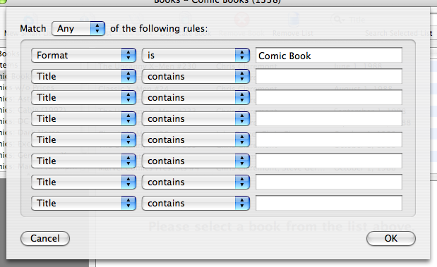

Lists & Smart Lists
Within Books, there are several levels of objects. Fields correspond to particular details about a given book. "Title" is a field. Book records are a collection of fields that correspond to an actual book. A book with a "title" of "Hearts in Atlantis" and an "author" of "Stephen King" corresponds to the King's compilation of short stories about Vietnam. Lists are collection of book records. You may create lists to sort books by authors or have one list that contains your whole collection.
Smart lists are dynamic collections of books that satisfy some criteria. Smart lists differ from regular lists in that you cannot manually add books to a smart list. Furthermore, while a book may only be a member of one regular list, it can be a member of many smart lists.
Smart lists are configured by selecting a particular smart list and clicking the Edit Smart List icon in the toolbar. A new window will appear.

A Smart List Containing Comic Books
To make a smart list more restrictive, use the All option at the top of the window and add additional constraints. To make a smart list more inclusive, use the Any option and add additional matching options.
Did You Know?
The smart list feature is a pure rip-off of the smart playlist feature in iTunes. We don't even try to hide it.